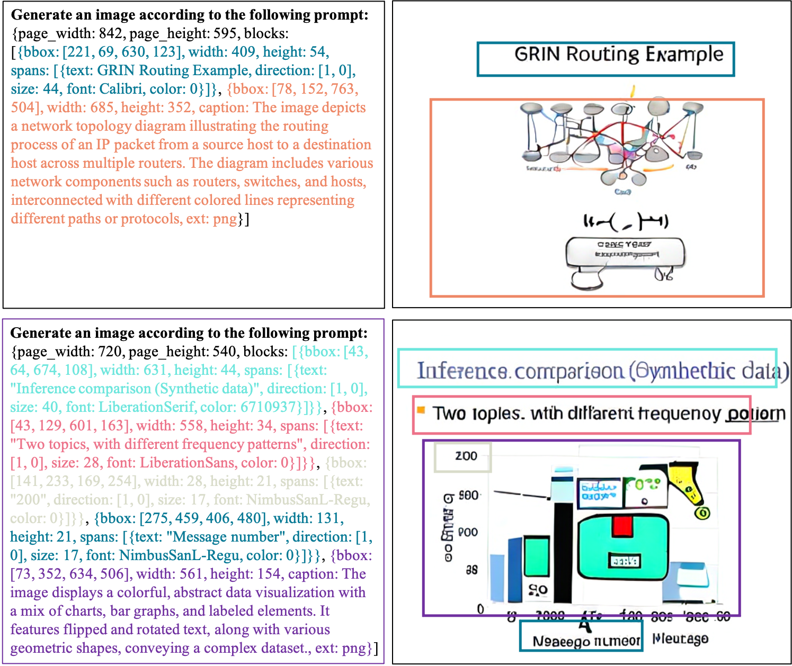

Applications


@article{wang2025beyond,
title={Beyond Words: Advancing Long-Text Image Generation via Multimodal Autoregressive Models},
author={Wang, Alex Jinpeng and Li, Linjie and Yang, Zhengyuan and Wang, Lijuan and Li, Min},
journal={arXiv preprint arXiv:2503.20198},
year={2025}
}
|
|